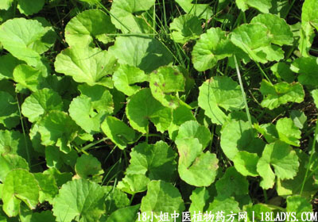

(本文解释权归中药材天地网兄弟站-18小姐中医植物药方网所有,如需转载请注明出处)

别名：老公根、乞兜钵、灯盏菜、崩口碗。
植物名：积雪草。
生长环境：本品为多年生、匍匐草本，喜生于低湿的、稍明蔽的草地。田基上、堤岸上，为常见之草本。
分布：广布于热带和亚热带地区，我国长江以南各省均有。
入药部分：全草。
采集期：全年。
自采地点：荒地。
性味：性寒凉、味甘微苦。
功能：清暑、解热、利水去湿。
主治、用量和用法：1、癍痧大热：生用4至8两，清水煎服；2、中暑发热：用法同上；3、脚肿，配伍用（方见山菩提）；4、痔疮：生用8两至1斤，煎水熏洗肛门；5、白浊：生用4两，捣烂取汁，加白糖适量，冲开水服；6、婴儿肛门红：生用2至4两，煎水洗肛门。
(本文解释权归中药材天地网兄弟站-18小姐中医植物药方网所有,如需转载请注明出处)